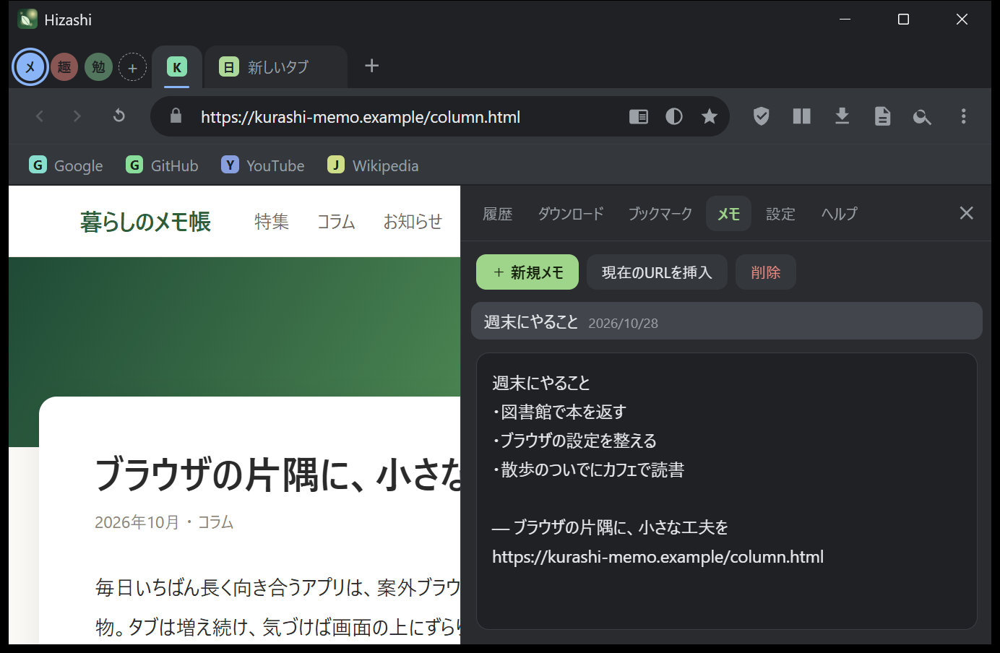

こんなふうに使えます
画面はすべて実際の Hizashi です。




機能
毎日使うブラウザに、あると助かる道具をまとめました。
コマンドパレット
タブ・ブックマーク・履歴・全コマンドをあいまい検索。計算もできます（1+2*3）。
ワークスペース
「仕事」「趣味」など色分けしたタブのグループを Alt+1〜9 で切り替え。
縦タブ / 分割表示
縦タブは折りたたみ可。2つのタブを左右に並べて見比べられます。
集中モード
時間を決めて、YouTube や X などをブロック。サイトの一覧は自由に編集できます。
リーダーモード
本文だけを抜き出して、文字サイズ・背景色を調整。読了時間も表示します。
要素ブロッカー
邪魔な要素をクリックで消去。サイトごとに記憶され、次回も消えたまま。
広告・追跡ブロック
広告/計測ドメインを遮断し、URL の utm_* や fbclid を自動で除去。
HTTPS 自動化
http のサイトを https で開き直し。開けないサイトは自動で元に戻します。
タブの自動休止
使っていないタブのメモリを解放。再起動しても前回のタブが戻ります。
全ページのスクリーンショット
縦に長いページも1枚で撮影。保存してクリップボードにもコピーします。
検索ショートカット
アドレスバーで yt ねこ gh electron map 東京駅 のようにサイト内検索。
プライバシー
テレメトリなし・アカウント不要。データはすべてあなたのPCの中だけに保存されます。
使いはじめる
- ダウンロード
上のボタンからHizashi.exeを取得します。 - ダブルクリック
インストールは不要です。.NET も別に入れなくて大丈夫です。 - Ctrl+K を押す
コマンドパレットから、ほとんどの操作ができます。
よくある質問
「Windows によって PC が保護されました」と出ます
署名のない個人開発のアプリのため表示されます。「詳細情報」→「実行」で起動できます。ソースコードは公開されていて、自分でビルドもできます。リリースには SHA-256 も載せています。
Chrome の拡張機能は使えますか？
使えません。表示エンジンは Chromium ですが、拡張機能の仕組みは載っていません。広告ブロックなど、よく使う機能は Hizashi 側に組み込んでいます。
Google アカウントでログインできますか？
ブラウザの名乗りを Chrome に揃えていますが、「安全でないブラウザ」と判定される場合があります。現在検証中です。うまくいかない場合は、Issue で教えてください。
広告はすべて消えますか？
いいえ。広告ブロックはドメイン単位で、広告配信・計測サービスへの通信を遮断します。YouTube の動画広告のように、サイト自身が配信する広告は防げません。
データは送信されますか？
Hizashi 自身はテレメトリを一切送りません。履歴・ブックマーク・メモ・設定はあなたのPC内に保存されます。表示エンジンの WebView2 ランタイム（Microsoft 製）の診断データは、Windows の設定に従います。